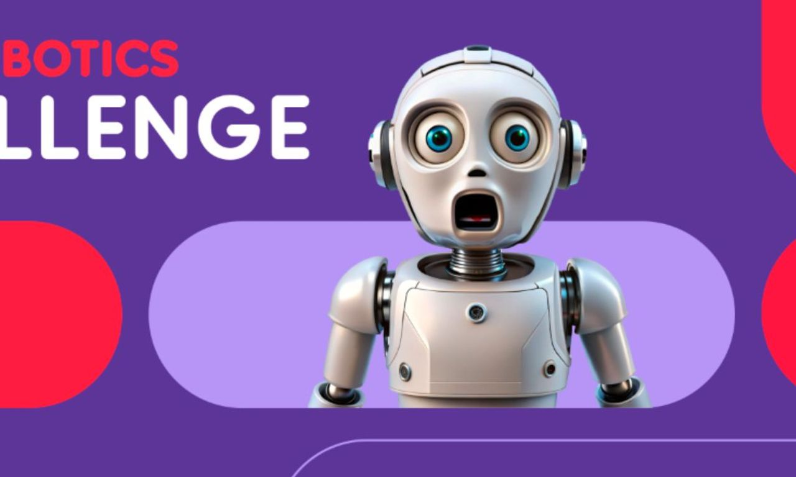
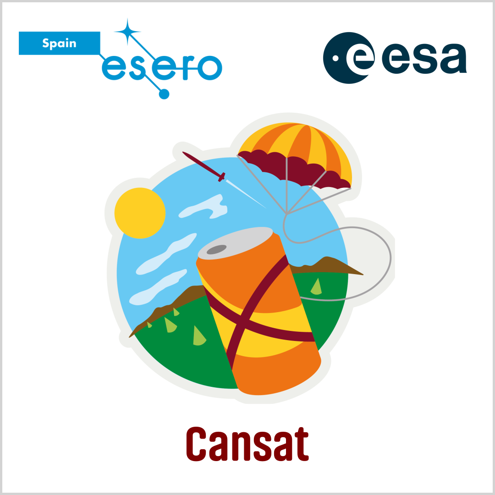

Aquí recopilo algunos de los eventos más importantes en los que he estado. Gracias a ellos he podido aprender, crecer y desarrollar habilidades que hoy aplico en mis proyectos y proximos retos.

El ASTI Robotics Challenge es una de las competiciones de robótica educativa más importantes de España, donde equipos de todo el país diseñan, construyen y programan su propio robot móvil para superar distintos retos técnicos. En la edición 2025, celebrada en Burgos, nuestro equipo se clasificó para la Gran Final entre más de 180 participantes y consiguió el 3º puesto en la categoría de Sumo. Meses de diseño, pruebas, errores y mejoras constantes nos llevaron hasta el podio. Pero más allá del trofeo, lo realmente interesante fue el camino para llegar hasta allí… Leer más

En el marco de la competencia CanSat 2023/2024, nuestro equipo Artemis se propuso un desafío ambicioso: diseñar un satélite en miniatura capaz de ir más allá de lo esperado. Con el proyecto DuckingForFire, no solo nos adentramos en el mundo de la tecnología aeroespacial, sino que también exploramos soluciones innovadoras para uno de los problemas más urgentes de nuestro entorno: los incendios forestales. Gracias a nuestro enfoque creativo y a la combinación de sensores de Co2 y vigilancia visual, logramos alcanzar las semifinales, dejando claro que el futuro del monitoreo ambiental puede estar al alcance de una lata de refresco… Leer más